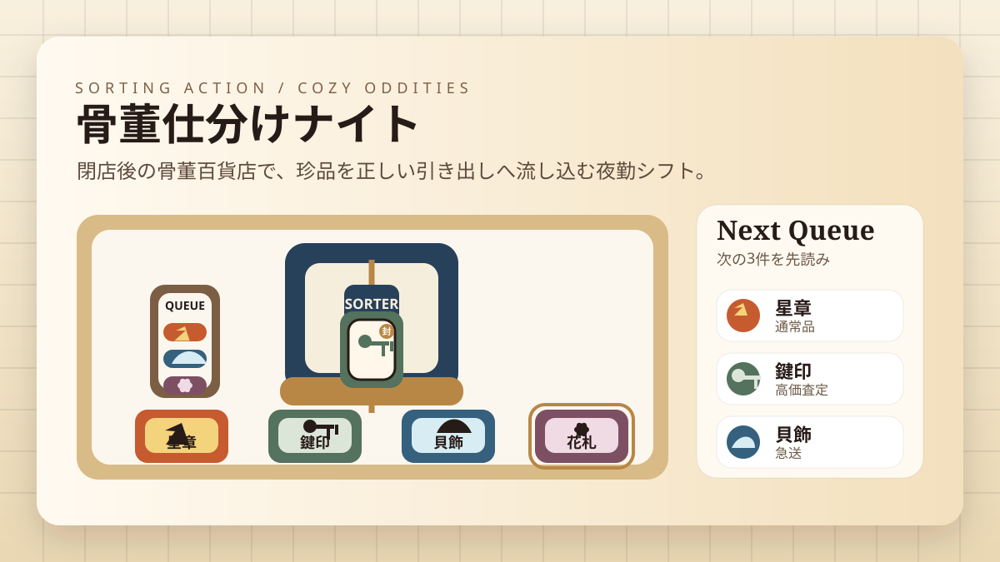

遊び方
- 上から流れてくる珍品の紋章を確認します。
- 4つの引き出しのうち、正しい送り先を選びます。
- 選んだ瞬間にその引き出しへ送り込めるので、見極めと判断の速さが大事です。
- 正しく仕分けるほどコンボが伸び、得点も大きくなります。
仕分けゲーム / カジュアル / 無料ブラウザゲーム
骨董仕分けナイトは、閉店後の骨董百貨店で、流れてくる珍品を正しい引き出しへすばやく送る無料ブラウザ仕分けゲームです。整理ゲームや仕分けゲームが好きな人に向いた、60秒の短時間ミニゲームです。

今流れている珍品だけを見るのではなく、次の3件を先に確認しておくとミスが減ります。金の封蝋が付いた品は高得点なので、コンボが高い時にしっかり取り切るとスコアが伸びます。
無料 ブラウザゲーム 暇つぶし、短時間で遊べる ミニゲーム、整理ゲーム、仕分けゲームを探している人向けです。考え込みすぎず、見て切り替えるだけなので、1回が短く何度も遊べます。
ただ押すだけではなく、分岐口へ届くまでに送り先を切り替える“先読み”が必要です。レトロな骨董百貨店の世界観と、手触りの良い仕分けテンポが気持ちよく噛み合います。
はい。インストール不要で遊べる無料ブラウザゲームです。
スマホ・PC対応です。4つの引き出しをタップするだけで遊べます。
次の3件を見ながら先回りで引き出しを切り替え、金の封蝋付きの珍品をコンボ中に回収してください。